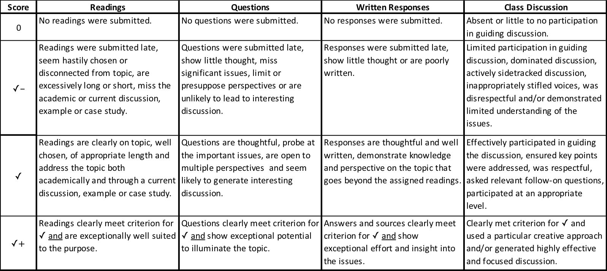

Computer Science 491
Senior Seminar
Dickinson College
Spring Semester 2019
Grant Braught
Student Led Discussions
Introduction
Class readings and discussions during the spring semester will focus on contemporary social, legal and ethical issues in computing. The professor will establish the basis for these discussions during the first several weeks of the course through readings and discussions of ethical frameworks and case studies of their application. Students, in small groups, will select the topics, identify readings and prepare and lead a class discussion.
Assignment
Work for this assignment will consist of three main components:
- Topic Selection: Topics will be selected and dates for discussion will be selected during the first week of class. In addition, it is highly recommended that each group visit with the professor to discuss their topic and their approach to it. The professor will be able to help shape and focus the topic and may be able to suggest resources and possible readings for your topic.
- Preparation: In preparation for leading your discussion the following elements are required:
- Readings: Identify reading(s) for the class to complete before the discussion. The reading(s) should provide both an academic overview of the topic area and a current discussion, example or case study. You may find it helpful to use both library and on-line searches to find the most appropriate materials. You are expected to read much more about your topic than you assign to the class. This is to better inform you about the topic and to ensure that you are well informed on it as you begin to prepare to lead the discussion. The list of readings that you plan to assign is due to the professor one week prior to your discussion date. You are highly encouraged to discuss your reading lists with the professor prior to the submitting the final list.
- Questions: Develop a list of 3-5 questions for class discussion. These questions should be designed to address the important issues, facilitate the examination of the issue from different perspectives and lead to engaging conversation during class. Your list of questions is due to the professor one week prior to your discussion date. You are highly encouraged to discuss your questions with the professor prior to the submitting the final list.
- Written Responses: Each member of the discussion group must submit a written response (1-2 paragraphs each) for each of the questions that have been posed. These responses are to be submitted to Moodle two nights before the discussion.
- Plan the Discussion: The group must decided how to run the discussion (see Leading a Discussion below) and identify the key points to be sure are raised in the discussion. Your plan should include the questions you posed, trying to anticipate different views and thinking about how to respectfully challenge the views that arise.
- Review Moodle Forum Posts: Before leading the discussion the group members must review the forum posts made by the rest of the class. You are not expected to change your plan for the discussion based on these posts. Rather, having read them you will know better what to expect during the discussion. This will enable you to ask effective follow-on questions or to draw out interesting perspectives that have been expressed by your classmates by asking them to contribute.
- Leading Class Discussion: Lead the class discussion in a well organized, thoughtful and effective manner. This will include exercising appropriate control over the discussion, ensuring all voices are heard and respected, making sure that the most significant points are addressed and moving through the topics at a reasonable pace.
Leading a Discussion
You can be creative in how you organize and run the discussion. Some good advice on leading discussions can be found at:
Grading
I will assess class discussions using the rubric below. The standard score, and what you should generally expect to receive, is a ✓. Something exceptionally notable is required to move either up to a ✓+ or down to 0 or ✓-.

Note: Some language adapted from COMP492 Assignment A2: Co-Leading a Discussion form John MacCormick's earlier offering of this course.